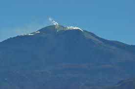

Putana
Cerro Colorado/Cerros de Tocorpuri - Bolívia/Chile
Putana (também conhecido como Jorqencal ou Machuca) é um estratovulcão na fronteira entre Bolívia e Chile. Encontra-se imediatamente NNE de Cerro Colorado, sobre 6 km (4 mi) norte de Volcán Escalante, o membro mais ao norte do complexo Sairecabur e 14 km (9 mi) sul do complexo Cerros de Tocorpuri. A atividade fumarólica intensa ocorre em sua cimeira, e uma solfatara (veja fumarola) pode ser observado na cratera principal.
